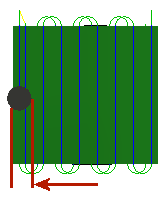

La passe 1 démarre à droite
La passe 2 démarre à gauche
Activez cette option pour usiner à partir des deux côtés de la pièce lorsque plusieurs coupes en profondeur sont effectuées. Le recouvrement de départ est appliqué à partir de chaque côté de la pièce pour chaque passe de pas en Z.
|
La passe 1 démarre à droite |
 |
 |
Passe 1 - Recouvrement |
Passe 2 - Recouvrement |